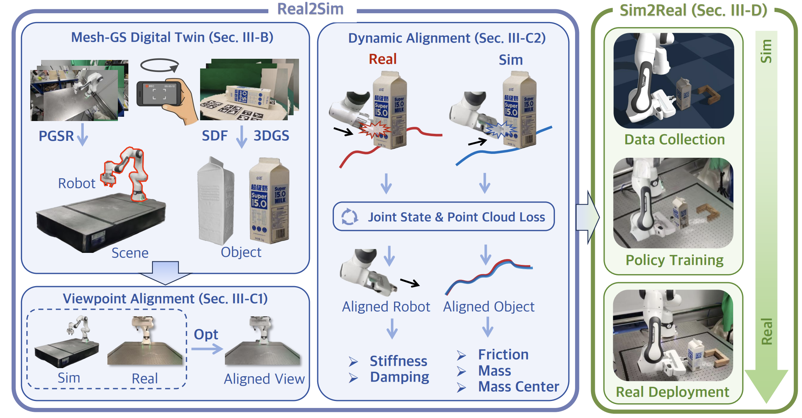

TwinAligner: Visual-Dynamic Alignment Empowers Physics-aware Real2Sim2Real for Robotic Manipulation
Hongwei Fan*, Hang Dai*, Jiyao Zhang*, Jinzhou Li, Qiyang Yan, Yujie Zhao, Mingju Gao, Jinghang Wu, Hao Tang and Hao Dong
* Equal contribution.
arXiv 2025
Summer 2025

Abstract
The robotics field is evolving towards data-driven, end-to-end learning, inspired by multimodal large models. However, reliance on expensive real-world data limits progress. Simulators offer cost-effective alternatives, but the gap between simulation and reality challenges effective policy transfer.
This paper introduces TwinAligner, a novel Real2Sim2Real system that addresses both visual and dynamic gaps. The visual alignment module achieves pixel-level alignment through SDF reconstruction and editable 3DGS rendering, while the dynamic alignment module ensures dynamic consistency by identifying rigid physics from robot-object interaction.
TwinAligner improves robot learning by providing scalable data collection and establishing a trustworthy iterative cycle, accelerating algorithm development. Quantitative evaluations highlight TwinAligner's strong capabilities in visual and dynamic real-to-sim alignment. This system enables policies trained in simulation to achieve strong zero-shot generalization to the real world. The high consistency between real-world and simulated policy performance underscores TwinAligner's potential to advance scalable robot learning.
Method

Demo
Keywords
Real2Sim2Real · Physics-aware